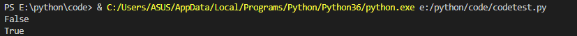
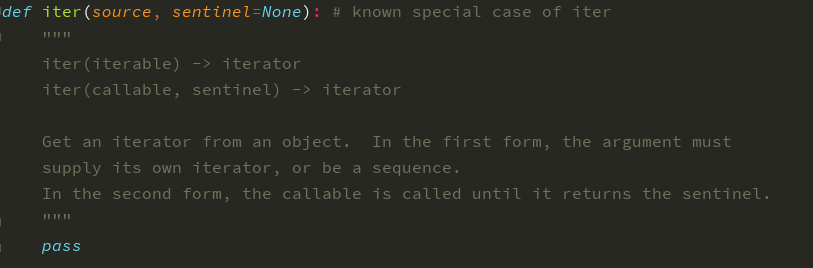
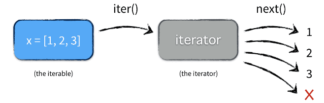
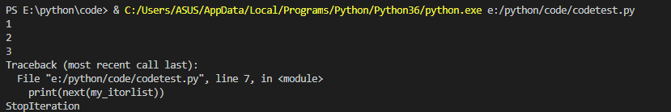

可迭代对象不一定是迭代器，而迭代器一定是可迭代对象.在Python中，list序列类型等，通过for...in我们可以遍历其中的数据。我们称其为可迭代对象(Iterable)。迭代对象只要实现__iter__()或者__getitem__()即可，迭代器还必须实现__next__()。
from collections.abc import Iterable, Iterator
my_list = [1, 2, 3]
my_itorlist = iter(my_list)
print(isinstance(my_list, Iterator))
print(isinstance(my_itorlist, Iterator))
pass 我们可以看到list并不是迭代器类型，iter()函数可以将可迭代对象变为迭代器对象。


将可迭代对象变为迭代器对象后，我们可以通过next()实现顺序访问元素。下图为可迭代对象到迭代器的转换以及访问元素的方法。访问完所有元素后，会抛出StopIteration异常。

my_list = [1,2,3]
my_itorlist = iter(my_list)
print(next(my_itorlist))
print(next(my_itorlist))
print(next(my_itorlist))
print(next(my_itorlist))

斐波那契数列指的是这样一个数列：1、1、2、3、5、8、13、21、34。在遇到斐波那契数列需要打印前100个数字的问题，我们最常用的解决办法就是使用如下的while循环。
def fib(index):
re_list = []
n,a,b = 0,0,1
while n<index:
re_list.append(b)
a,b = b, a+b
n += 1
return re_list不可否认这是一个较好的解决办法，但是面对打印海量斐波那契数列的时候，我们就会面对一个内存开销大大增加的问题。我们总不可能把一千万个数据全部存储到列表中吧！这时候迭代器的优点就体现出来了。迭代器只返回下一个数字，并且不会记录上一个数据，在我们需要打印的时候才会计算（惰性计计算)。使用迭代器解决斐波拉契数列的问题，我们即使面对大量的数据，也可以不需要担心内存的占用问题。
class Fb:
def __init__(self, n):
self.n = n #打印的数个数
self.current = 0
self.a = 0
self.b = 1
def __next__(self):
if self.current < self.n:
"""
a=b
b=a+b
"""
self.a, self.b = self.b, self.a + self.b
self.current += 1
return self.a
else:
raise StopIteration
def __iter__(self):
return self
if __name__ == '__main__':
fib_print = Fb(1000)
for num in fib_print:
print(num)通过自定义一个迭代器，我们可以更好地理解迭代器到底是个什么东西。
from collections.abc import Iterator#导入迭代器的抽象基类
class Company(object):
def __init__(self, employee_list):
self.employee = employee_list
def __iter__(self):
return LevyIterator(self.employee)
class LevyIterator(Iterator):#自定义的迭代器
def __init__(self,employee_list):
self.iter_employee = employee_list
self.index = 0
def __next__(self):
try:
next_obj = self.iter_employee[self.index]
except IndexError:#捕捉Index异常
raise StopIteration#抛出迭代器的异常StopIteration
self.index +=1
return next_obj
if __name__ == "__main__":
company = Company(["tom", "bob", "jane"])
my_itor = iter(company) #变为迭代器对象
while True:
try:
print (next(my_itor))
except StopIteration:
break
# for item in company:
# print(item)
上述代码中，main中的while....break代码是我们迭代输出的部分，这一点其实就是for...in输出的本质:先通过obj.__iter__()将对象变为迭代器类型，然后通过不断的next(obj)输出元素。